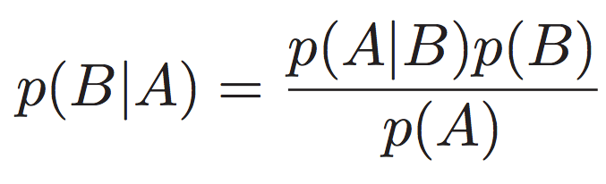

It seem like all we hear about nowadays is machine learning. But what is it exactly? In this short article, I’ll try to show you how to implement your own machine learning solution using Javascript. This can be a fascinating subject and it quickly gets very complex. I will only cover the basics but, who knows, it might actually lead to a second part.
Machine learning is exactly that. It’s a way for a machine to learn so that it can later on make it’s own decision. There are multiple ways to implement this. Various algorithms will yield various results.
The are two main categories of machine learning algorithms. Unsupervised algorithms will try to make sense of large data sets while supervised programs actually need to be trained in order to make sense of any data.
I like supervised machine learning because it’s easy to relate to. It feels just like the way we learn. When you have kids, you quickly realize that our brain is wired with a (very performant) supervised learning algorithm.
Truth is, you can write machine learning algorithms in just about any language. So why do it in Javascript, you might ask? I use this language on multiple projects and I simply thought it would be a nice exercise to use it since the syntax is very familiar to me. The following examples all run in NodeJs but nothing prevents you to run this code in a browser instead.
An easy machine learning algorithm to start with is the Naive Bayes implementation. It’s a simple classification algorithm. In a nutshell, the following code will let you teach your computer to identify whether some text should be classified in a specified group. Typical use cases for this are language detection of a text, spam filter, or even the gender of an author.
The classifier script that we will now build will try to learn from you to see what is the probability that a piece of text is in a specified group or another. The mathematical formula for Bayes theorem goes as follow:
So what does that mean in terms of code? Essentially, we are calculating the probability that a word is found in a specific group. We then calculate the total probability for the block of text.
So our classifier object will have two methods. The first one will be used to teach our script and the second one will be used to categorize some text. The Classifier also holds a dictionary of words, associating those into a group.
//Create a classifier object
var Classifier = function() {
this.dictionaries = {};
};
//Classify is used to "teach" something to your machine
//You pass it a string and a group to which it's associated with
Classifier.prototype.classify = function(text, group) {
//Code will go here.
};
//Categorize will check a string against the dictionaries to see
//in which group it falls.
Classifier.prototype.categorize = function(text) {
//Code will go here.
};
Let’s first take a look at our classify function. When we provide this function a string, it should take each word and add them to the specified group. This is easily done with a .map function.
Classifier.prototype.classify = function(text, group) {
var words = text.split(" ");
this.dictionaries[group] ? "" : this.dictionaries[group] = {};
var self = this;
words.map((w) => {
self.dictionaries[group][w] ? self.dictionaries[group][w]++ : self.dictionaries[group][w] = 1;
});
};
For the categorization part, we loop through our dictionary, extract the words that we have in the string to categorize and calculate the probability for each word of being in a group or another. We then average out the probabilities and return the group name of the most probable group.
//Categorize will check a string against the dictionaries to see
//in which group it falls.
Classifier.prototype.categorize = function(text) {
var words = text.split(" ");
var self = this;
var probabilities = {};
var groups = [];
var finals = {};
//Find the groups
for (var k in this.dictionaries) {groups.push(k);}
for (var i = 0; i < words.length; i++) {
//Ignore small words
if (words[i].length <= 2) continue;
//find the word in each group
var sums = {};
var probs = {};
for (var j = 0; j < groups.length; j++) {
if (!sums[words[i]]) sums[words[i]] = 0;
if (!this.dictionaries[groups[j]][words[i]]) this.dictionaries[groups[j]][words[i]] = 0;
sums[words[i]] += this.dictionaries[groups[j]][words[i]];
probs[groups[j]] = (this.dictionaries[groups[j]][words[i]]) ? this.dictionaries[groups[j]][words[i]] : 0;
}
// Calculate the actual probability that a word is part of a group or another
for (var j = 0; j < groups.length; j++) {
(!probabilities[words[i]]) ? probabilities[words[i]] = {} : "";
(!probs[groups[j]]) ? probabilities[words[i]][groups[j]] = 0 : probabilities[words[i]][groups[j]] = probs[groups[j]]/sums[words[i]];
}
//Average out the probabilities
for (var j = 0; j < groups.length; j++) {
if (!finals[groups[j]]) finals[groups[j]] = [];
finals[groups[j]].push(probabilities[words[i]][groups[j]]);
}
}
for (var i = 0; i < groups.length; i++) {
finals[groups[i]] = average(finals[groups[i]]);
}
//Find the highest probability
var highestGroup = "";
var highestValue = 0;
for (var group in finals) {
if (finals[group] > highestValue) {
highestGroup = group;
highestValue = finals[group];
}
}
return highestGroup;
};
We also needed an average function so we added the following in our code
//Just an average function
function average(numbers) {
var sum = 0;
for (var i = 0; i < numbers.length; i++) {
sum += numbers[i];
}
return sum / numbers.length;
}
So, there you have it, your first machine learning algorithm. You can test that it works by running the following script.
var classifier = new Classifier();
classifier.classify("Ce texte est en francais", "fr");
classifier.classify("Celui ci est aussi en francais", "fr");
classifier.classify("This text is in english", "en");
classifier.classify("This text is also in english", "en");
console.log(classifier.categorize("text in english"));
console.log(classifier.categorize("texte en francais"));
That's it. This code will output
> en > fr
This is obviously a very simple implementation. It will work but there are several tweaks that can be done in order to increase the performance. But you now know you to build your own implementation and this will help you to use it in your code base. Using this simple script, you could implement a spam filter (by passing the email content as the text and “spam” or “not-spam” as the group). You will need to train your algorithm to start but eventually, it will be able to make the decisions by itself.